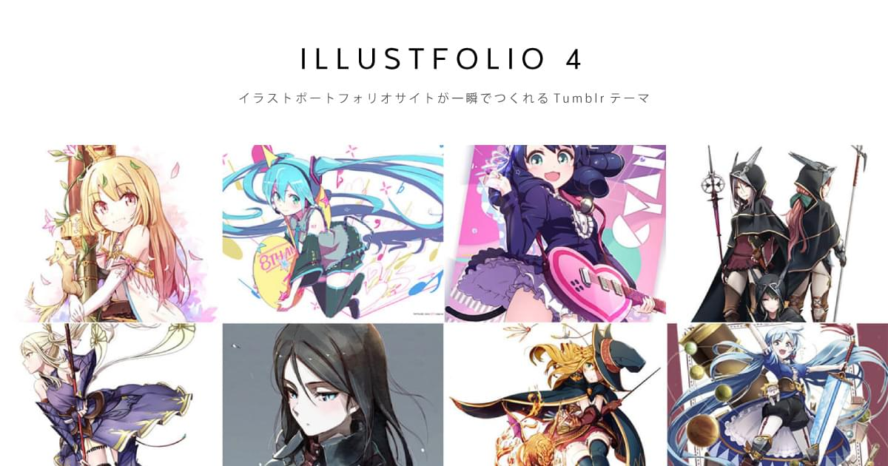

Tokusetsu 3 ドキュメントへようこそ
Tokusetsu 3 は、同人誌・同人音楽 CD の告知サイトが簡単に作れる無料 Tumblr テンプレートです。 HTML の知識を必要とせず、フォームに情報を入力していくだけで告知サイトが作れます。 @sanographix が作っています。
デモを見る
デモページはこちらです。
対応ブラウザ
- IE11, Edge
- Win / Mac 版 Chrome, Firefox, Opera 各最新版
- Mac 版 Safari 最新版
- iOS Safari 最新版
- Chrome for Android 最新版
次のページでインストール方法を解説します。
次のページへすすむ